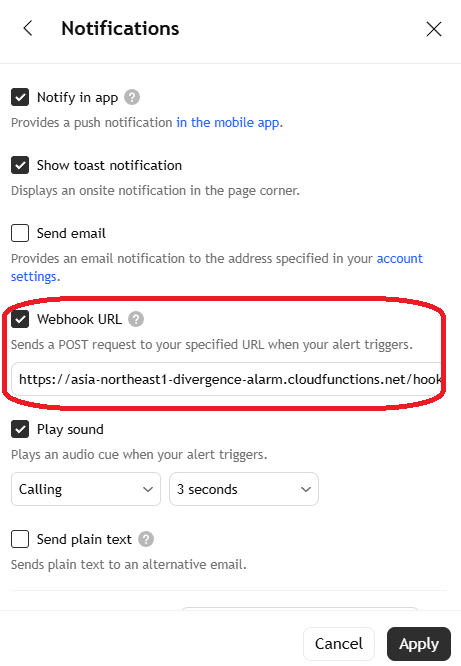

Atur alarm paksa untuk kata kunci
Pilih jenis alarm dan suara pada aturan kata kunci. Video menunjukkan cara mengatur alarm paksa untuk sinyal TradingView.
Kirim tes dari halaman ini untuk memeriksa pengiriman ke ponsel Android Anda. Kemudian kirim satu alarm TradingView dengan kata kunci AA untuk memeriksa aturan alarm Anda.
Di DivAlarm, buka Alarm kata kunci · Order otomatis → Kata kunci webhook, tambahkan AA dan aktifkan alarmnya. Salin URL webhook di bawah ini saat masuk dengan akun yang sama dengan ponsel Anda.
Masuk dengan akun aplikasi Anda untuk melihat URL Anda
Jaga alamat ini tetap pribadi. Siapa pun yang memilikinya dapat mengirim sinyal ke akun Anda.
Untuk menguji alarm saja, matikan order otomatis untuk kata kunci atau kombinasi yang cocok dengan AA.
 Buka gambar ukuran penuh
Buka gambar ukuran penuh
Klik kanan grafik dan pilih Tambah alarm. Buka Notifikasi, centang URL Webhook, tempel alamat Anda dan tekan Terapkan.
Gunakan URL yang sama untuk alarm lain. Jika alarm baru sudah menampilkan alamat Anda, periksa apakah URL Webhook diaktifkan. Untuk alarm yang sudah ada, periksa pengaturannya sendiri.
 Buka gambar ukuran penuh
Buka gambar ukuran penuh
 Buka gambar ukuran penuh
Buka gambar ukuran penuh

Buka gambar ukuran penuhUntuk pemeriksaan cepat, pilih Harga → Di Luar Saluran. Jika harga saat ini 100, misalnya, atur batas bawah ke 98 dan batas atas ke 99. Pilih Hanya sekali. Untuk alarm indikator, pilih kondisi indikator yang ingin Anda gunakan.
 Buka gambar ukuran penuh
Buka gambar ukuran penuh
Buka Pesan di TradingView, sertakan kata kunci AA yang sama yang Anda aktifkan di aplikasi dan tekan Terapkan. Salin contoh di bawah. Jika aturan Anda cocok dengan awal pesan, letakkan AA di depan.
AA Webhook test
Untuk menyertakan simbol dan harga, gunakan AA {{ticker}} {{close}}. TradingView menggantikan placeholder saat alarm aktif.
 Buka gambar ukuran penuh
Buka gambar ukuran penuh
Tekan Buat dan tunggu pembaruan harga. Temukan kejadian di log alarm TradingView, lalu periksa alarm AA di DivAlarm. Matikan aturan tes dan alarm tes TradingView setelah selesai.